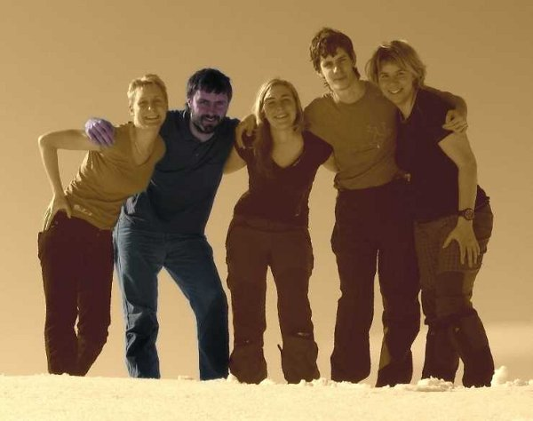

Tým
| Lenka | Hanka | Ondra | Sabča | |
|
Vašek | |
|
Věčný student a kutil zabývajicí se jazyky lidí i strojů. Trošku slušňák, trošku rebel. Z mnoha zajímavých etap 20. století mne zaujala 60. léta, která byla ve znamení nadějí a očekávání. Horečně probíhala soutěž supervelmocí v dobývání vesmíru, vznikaly první počítače. Rodily se futuristické vise moderní společnosti a techniky, v tehdejším Československu komunismus s lidskou tváří. Jen málo z toho se podařilo naplnit, ale to tvůrčí nadšení bylo určitě krásné. Dnešní doba otvírá lidem více možností než kdy předtím. Můžeme volně cestovat, podnikat, společensky se angažovat atd. Mám ale pocit, že mnoho lidí je z takové míry svobody v rozpacích, neumí s ní naložit - nakonec bezradně volí cestu povrchnosti a pohodlí, která člověka připraví o hlubší hodnoty, ale nic nového mu nepřináší. Svoboda pro mne znamená moci se rozhodovat, volit svou cestu - být sám sebou, nikoliv otrokem někoho jiného, nebo svých vlastních slabostí. Z čím více cest mohu volit, tím svobodněji se cítím. Mým cílem je být natolik vnitřně silný, abych mohl volit i ty obtížnější cesty - ty zpravidla vedou nejdál. |  |